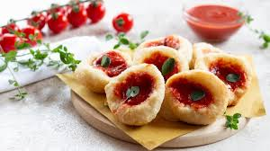

Secondo la tradizione le pizze originali sono 2,la pizza margherita(pomodoro mozzarella e basilico) e la marinara (pomodoro olio e origano), nel corso del tempo sono però stati creati centinaia di altri gusti dai più comuni ai più stravaganti.

La pizza fritta nasce dallo stesso impasto della pizza, ma anziché essere cotto a legna, viene bagnato nell'olio rovente che lo rigonfia,l'impasto viene riempito con ricotta, pepe, fiordilatte e cicoli (pancetta), alcune varianti hanno un ripeino composto da pomodoro e mozzarella
